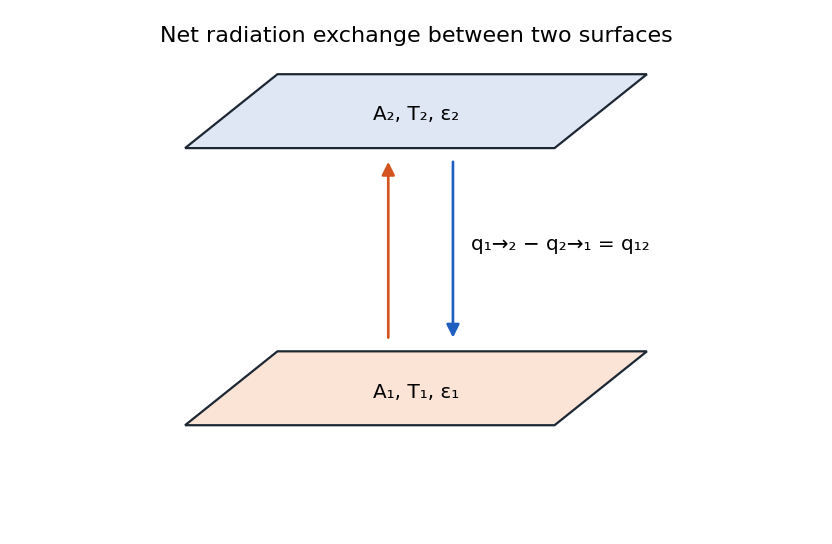
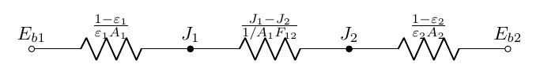
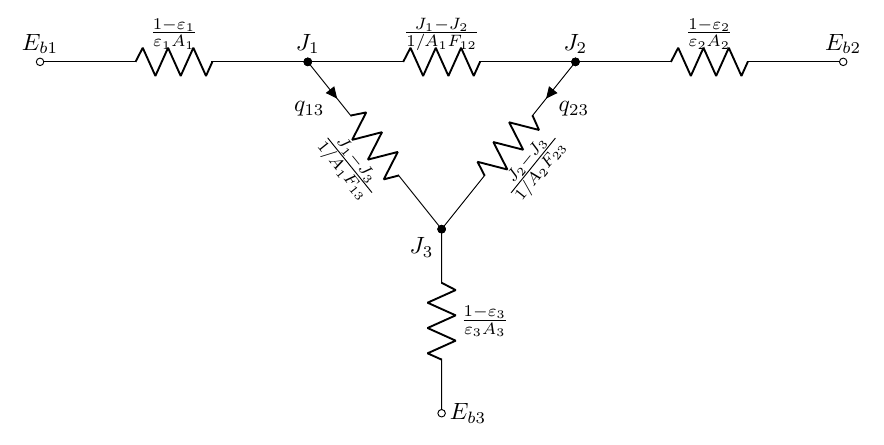
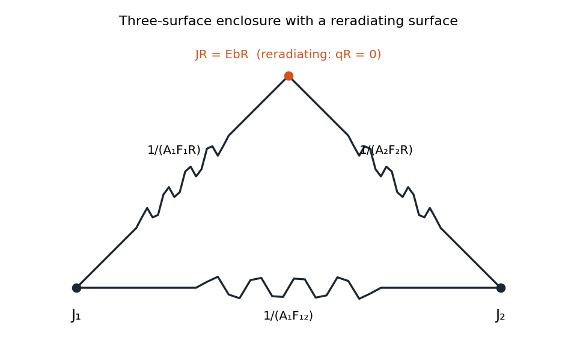
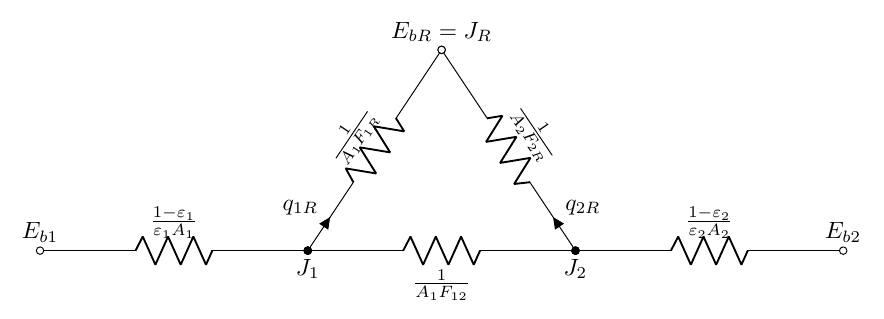
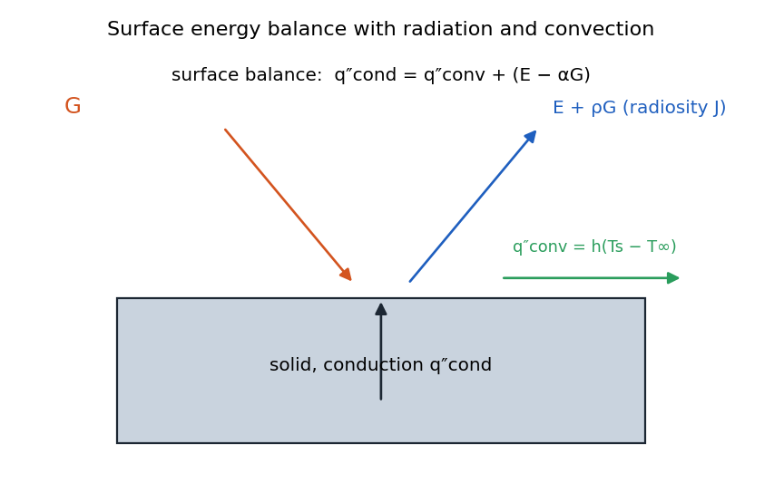

Radiation Exchange Between Surfaces¶
Net Radiation Exchange Between Two Surfaces¶

The net exchange of radiation between two surfaces is:
Using reciprocity \(\left(A_1 F_{12}=A_2 F_{21}\right)\) :
Sign Convention¶
It’s critical to maintain consistent sign conventions when working with radiation networks:
-
\(q_i\) is positive when heat leaves surface \(i\) (cooling)
-
\(q_{i \rightarrow j}\) represents the directional radiation from surface \(i\) to surface \(j\)
-
\(q_{ij}\) represents the net radiation exchange between surfaces \(i\) and \(j\), with \(q_{ij} = -q_{ji}\)
Space Resistance: Only involves geometry measure of how easily two surfaces exchange thermal radiation.
Network Construction - Two Surfaces¶
For a two-surface enclosure:

Network Construction - Three Surfaces¶
For a three-surface enclosure:

For each additional surface, we add:
-
A new \(E_{bi}\) and \(J_i\) node pair
-
A surface resistance connecting \(E_{bi}\) to \(J_i\)
-
Space resistances connecting \(J_i\) to all other \(J\) nodes
Network Analysis Method¶
To solve a radiation network:
-
Identify the number of unknowns (typically one per surface - either \(T_i\) or \(q_i\))
-
Write energy balance equations at each \(J\) node using Kirchhoff’s current law
-
For each \(J\) node: \(q_i = \sum_{j \neq i} q_{ij}\) (what leaves a surface must distribute to all other surfaces)
-
Express these in terms of potentials and resistances:
- Solve the resulting system of equations
For an \(N\)-surface enclosure, you’ll need to solve a system of \(N\) equations with \(N\) unknowns.
-
For a known temperature distribution, solve for heat transfer rates
-
For a known heat transfer distribution, solve for surface temperatures
Key Points:¶
Therefore,
Re-radiating Surfaces¶
A reradiating surface is one that:
-
Is thermally insulated from conduction and convection
-
Has no internal heat generation
-
Participates only in radiation heat transfer
-
Must achieve a temperature where the net radiation exchange equals zero
For a reradiating surface \(i\), we have:
-
\(q_i = 0\) (no net heat transfer to/from the surface)
-
\(E_{bi} = J_i\) (the radiosity equals the blackbody emission)
This significantly simplifies the network, as we can eliminate the \(E_{bi}\) node and directly work with the \(J_i\) node. The surface resistance becomes irrelevant since there is no potential difference across it.


Considering the entire circuit, we can simply find heat transfer as follow:
where
Important Considerations for Radiation Resistance¶
When working with radiation resistances, several important considerations must be kept in mind:
-
Units: Radiation resistances have units of \(\text{m}^{-2}\), which is different from conduction or convection resistances. This means they cannot be directly combined in a single network without proper conversion.
-
Temperature potential: Radiation networks use \(\sigma T^4\) as the potential rather than \(T\), making them fundamentally different from conduction/convection networks.
-
Dimensional consistency: When solving networks, ensure all terms maintain proper dimensional consistency.
-
Network reduction: While circuit reduction techniques (series, parallel) can sometimes be applied, it’s only valid for specific cases where the heat flow path is effectively one-dimensional.
-
Mixing modes: Never directly connect radiation resistances to conduction/convection resistances in a single network without proper conversion - this would be like "adding apples and oranges."
Multi-Mode Heat Transfer¶
Many practical problems involve multiple heat transfer modes (conduction, convection, and radiation) simultaneously. To handle such problems:
-
Draw a control volume that captures all relevant heat transfer mechanisms
-
Apply energy conservation to this control volume
-
Use consistent sign conventions across all modes (e.g., positive for heat leaving the surface)
-
Consider appropriate boundary conditions for each mode

For a steady-state surface energy balance with consistent sign convention (positive for heat leaving):
Note:
-
for \(q_{i, \text { rad }}, q_{i, \text { conv }}\) and \(q_{i, \text { cond, }}\), positive mean surface losses energy.
-
\(q_{i \text {, rad }}\) is the \(q_i\) in previous radiation network.
-
\(q_{i, \text { ext }}=q_{i, \text { rad }}+q_{i, \text { conv }}+q_{i, \text { cond }}\) holds at any time, ie., transient and steady state..
Solution Strategy for Multi-Mode Problems¶
When solving problems with multiple heat transfer modes:
-
Solve the radiation network first (radiation responds essentially instantaneously)
-
Use the resulting heat fluxes as boundary conditions for conduction/convection
-
Apply energy conservation at each surface
-
For complex geometries, numerical methods may be required
The instructor emphasized that radiation is effectively a "rigid" constraint that responds at the speed of light, making it appropriate to solve first and then use as a boundary condition for slower processes.
Example:¶
Consider a very long enclosure with a uniform square cross section as shown below. One of the view factors is known as \(\boldsymbol{F}_{13} \approx 0.4\). Find the rest of the view factors.
solution: We have
-
Due to the flat surfaces, all self-view factors are zero: \(F_{11} = F_{22} = F_{33} = F_{44} = 0\)
-
Due to symmetry in the square enclosure:
-
Opposite surfaces: \(F_{13} = F_{31} = F_{24} = F_{42} = 0.4\)
-
Adjacent surfaces: \(F_{12} = F_{21} = F_{23} = F_{32} = F_{34} = F_{43} = F_{41} = F_{14} = 0.3\)
-
-
Verification: For each surface, the sum of view factors equals 1
| \(F_{i j}\) | \(i=1\) | \(i=2\) | \(i=3\) | \(i = 4\) |
|---|---|---|---|---|
| \(j=1\) | 0 | 0.3 | 0.4 | 0.3 |
| \(j=2\) | 0.3 | 0 | 0.3 | 0.4 |
| \(j=3\) | 0.4 | 0.3 | 0 | 0.3 |
| \(j=4\) | 0.3 | 0.4 | 0.3 | 0 |